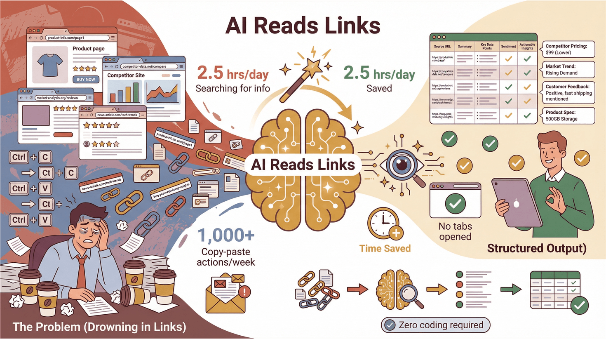

|
Índice OpenAI Hugging Face Google AI Anthropic IBM Watson DeepMind Machine Learning Mastery Coursera IA 1. OpenAI Es una de las empresas más importantes de inteligencia artificial del mundo. Creó ChatGPT y desarrolla modelos capaces de escribir textos, responder preguntas, programar y generar imágenes. En su web puedes encontrar investigaciones, noticias y herramientas de IA. 2. Hugging Face Es una plataforma donde miles de personas y empresas comparten modelos de inteligencia artificial. Sirve para crear aplicaciones de texto, imágenes, voz y vídeo usando IA. También tiene herramientas gratuitas para aprender y experimentar. 3. Google AI Es la sección de inteligencia artificial de Google. Explica cómo utilizan la IA en traductores, buscadores, asistentes virtuales y otras aplicaciones. También publican investigaciones y proyectos educativos sobre esta tecnología. 4. Anthropic Empresa especializada en desarrollar IA segura y responsable. Son los creadores del asistente Claude. En su web hablan sobre seguridad, ética y avances en inteligencia artificial. 5. IBM Watson IBM utiliza la inteligencia artificial en empresas, hospitales y bancos. Watson es su sistema de IA más conocido y ayuda a analizar datos y automatizar tareas. 6. DeepMind DeepMind investiga inteligencia artificial avanzada. Son conocidos por crear programas capaces de aprender juegos complejos y ayudar en investigaciones científicas y médicas. 7. Machine Learning Mastery Es una página educativa donde se explica de forma sencilla qué es el machine learning (aprendizaje automático), una rama de la inteligencia artificial. Tiene tutoriales y ejemplos fáciles de entender. 8. Coursera IA Página con cursos sobre inteligencia artificial y programación. Muchos cursos son gratuitos y están creados por universidades famosas. |
 |